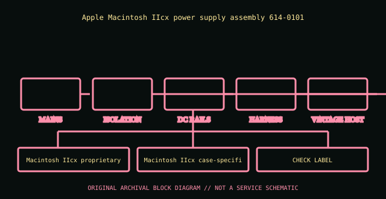

[ POWER CONVERSION // IDENTIFIED MODEL ]
Apple Macintosh IIcx PSU (614-0101)
Apple Macintosh IIcx power supply assembly 614-0101. This entry covers the specific model or bounded historical system assembly identified here; suffixes and supplier revisions are not presumed equivalent.

HIGH-VOLTAGE SAFETY: Disconnect mains before external inspection. Never open a PSU. Internal capacitors can retain dangerous charge after disconnection. Do not probe or repair its interior; use qualified service or replace it.
Model-specific ratings & fit
| Manufacturer identity | Apple Macintosh IIcx power supply assembly 614-0101 |
|---|---|
| Form factor / generation | Macintosh IIcx proprietary internal PSU, 1989 |
| AC input | 100–240 V AC, 50/60 Hz auto-ranging per service documentation; verify label. |
| DC output | 90 W nominal assembly; +5 V 7 A, +12 V 2.7 A, −12 V 0.3 A, −5 V 0.3 A per IIcx service reference. |
| Dimensions / mounting | Macintosh IIcx case-specific supply; connector and fan/air path part of compact case thermal design. |
| Connectors | 8-pin proprietary power connector to logic board plus drive power leads; not ATX. |
| Revision distinctions | 614-0101 is a documented Apple assembly; replacement vendor variants and service replacements may carry another Apple/ASM number. |
Compatibility & safe handling
- Verify full model, suffix, region and revision using the actual unit nameplate and matching manufacturer manual. Wattage and plug shape alone do not establish compatibility.
- Check AC input range, rail and combined output limits, derating, signaling/pinout, cooling direction, mounting and system qualification before installation.
- PSU modular-side cables are model-specific. Never reuse an unapproved lead; a matching plug can carry a different pinout.
- Server hot-plug is permitted only in qualified host configurations and under the host’s documented redundancy/live-service procedure.
- Never open or internally probe the supply. Retire damaged, wet, burnt, corroded, modified or unidentified units.
Revision & archival notes
614-0101 is a documented Apple assembly; replacement vendor variants and service replacements may carry another Apple/ASM number.
Apple Service Source IIcx service manual scan: retain assembly number, vendor label and region. Do not substitute a Mac II supply based only on connector appearance.
Photograph the full nameplate, model/FRU, supplier, revision/date code, line selector, cable ends, mounting orientation and source-document issue. Keep observed label data separate from test results.
Manufacturer or primary references
- Apple Macintosh IIcx PSU (614-0101) — manufacturer/product or primary technical referenceApple Macintosh IIcx power supply assembly 614-0101. Check the exact revision, region and system support information.
- Intel ATX / ATX12V Power Supply Design GuideReference for desktop ATX context only. Proprietary historical and hot-swap server outputs are not made interchangeable by ATX standards.
The specific PSU nameplate and corresponding model/service documentation remain controlling.